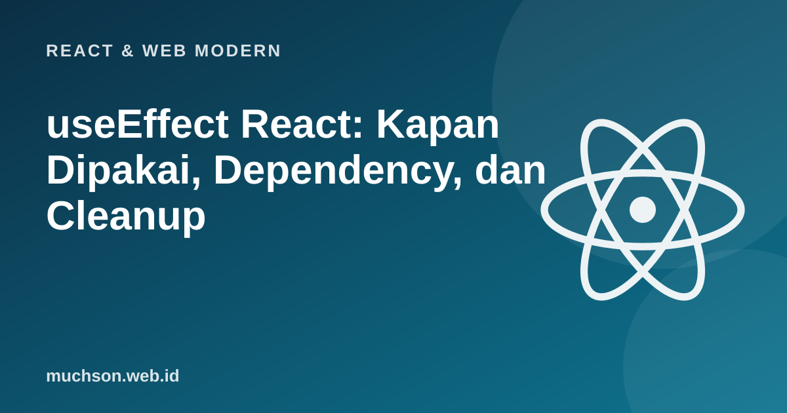

Beranda › Artikel › React & Web Modern
React & Web ModernuseEffect React: Kapan Dipakai, Dependency, dan Cleanup
useEffect adalah hook yang paling sering disalahgunakan. Tujuannya sederhana: menyinkronkan komponen dengan sesuatu di luar React, seperti server, timer, atau API browser. Begitu Anda melihatnya sebagai "sinkronisasi" bukan "siklus hidup", kebanyakan kebingungan hilang.
Sebaiknya sudah paham: useState, event handler

Setelah membaca dan mencoba materi ini, Anda mampu:
- menjelaskan apa itu efek samping dan kapan useEffect diperlukan
- memakai array dependency dengan benar
- menulis fungsi cleanup untuk timer, langganan, dan permintaan
- mengenali dan memperbaiki kesalahan umum
- mengenali kasus yang tidak perlu useEffect
Efek samping dan sinkronisasi
Rendering harus murni: dengan props dan state yang sama menghasilkan JSX yang sama, tanpa mengubah hal di luar komponen. Hal-hal yang menyentuh dunia luar (mengambil data, mengubah judul dokumen, memulai timer, mendengarkan event window) disebut efek samping dan ditempatkan di useEffect, yang dijalankan setelah React menampilkan hasil render.
import { useState, useEffect } from 'react';
function JudulHalaman({ nama }) {
useEffect(() => {
document.title = 'Halo, ' + nama; // menyinkronkan dokumen dengan props
}, [nama]); // jalankan ulang hanya bila nama berubah
return <h1>Halo, {nama}</h1>;
}Tiga bentuk array dependency
| Bentuk | Kapan efek berjalan | Pemakaian |
|---|---|---|
| useEffect(fn) | Setelah setiap render | Jarang diperlukan |
| useEffect(fn, []) | Sekali setelah render pertama (dan cleanup saat dilepas) | Sinkronisasi yang tidak bergantung pada data komponen |
| useEffect(fn, [a, b]) | Setelah render pertama dan setiap kali a atau b berubah | Paling umum |
Aturan: semua nilai reaktif (props, state, fungsi) yang dipakai di dalam efek harus masuk ke array dependency. Memaksa array kosong padahal efek memakai state akan menghasilkan nilai basi (stale). Linter eslint-plugin-react-hooks membantu memeriksanya otomatis.
Cleanup: membereskan sebelum efek berikutnya
Fungsi yang dikembalikan efek dijalankan sebelum efek dijalankan ulang dan saat komponen dilepas. Pakai untuk menghentikan timer, membatalkan langganan, atau membatalkan permintaan.
import { useState, useEffect } from 'react';
function Jam() {
const [waktu, setWaktu] = useState(() => new Date());
useEffect(() => {
const id = setInterval(() => setWaktu(new Date()), 1000);
return () => clearInterval(id); // cleanup: tanpa ini timer terus berjalan setelah komponen hilang
}, []);
return <p>{waktu.toLocaleTimeString('id-ID')}</p>;
}Simulasi urutan efek dan cleanup
Berikut tiruan sederhana (bukan kode React) yang mencetak urutan kejadian ketika dependency berubah. Urutannya yang penting: cleanup efek lama berjalan sebelum efek baru.
const efekAktif = new Map();
function jalankanEfek(nama, deps, fn, depsLama) {
const berubah = !depsLama || deps.some((d, i) => d !== depsLama[i]);
if (!berubah) return;
if (efekAktif.has(nama)) { console.log(' cleanup ->', nama, 'dengan deps lama', JSON.stringify(depsLama)); efekAktif.get(nama)(); }
console.log(' efek ->', nama, 'dengan deps', JSON.stringify(deps));
efekAktif.set(nama, fn() || (() => {}));
}
let depsLama;
for (const idRoom of ['umum', 'umum', 'kerja', 'kerja', 'umum']) {
console.log('render dengan idRoom =', idRoom);
jalankanEfek('sambung', [idRoom], () => {
console.log(' (terhubung ke', idRoom + ')');
return () => console.log(' (terputus dari', idRoom + ')');
}, depsLama);
depsLama = [idRoom];
}render dengan idRoom = umum
efek -> sambung dengan deps ["umum"]
(terhubung ke umum)
render dengan idRoom = umum
render dengan idRoom = kerja
cleanup -> sambung dengan deps lama ["umum"]
(terputus dari umum)
efek -> sambung dengan deps ["kerja"]
(terhubung ke kerja)
render dengan idRoom = kerja
render dengan idRoom = umum
cleanup -> sambung dengan deps lama ["kerja"]
(terputus dari kerja)
efek -> sambung dengan deps ["umum"]
(terhubung ke umum)Kesalahan klasik
1. Loop tak berujung
function Salah() {
const [data, setData] = useState([]);
useEffect(() => {
setData([1, 2, 3]); // mengubah state -> render ulang -> efek berjalan lagi -> ...
}); // tanpa array dependency, efek berjalan setiap render
return null;
}
// Perbaikan: beri array dependency yang tepat, atau tidak perlu efek bila data bisa dihitung saat render.2. Lupa membatalkan permintaan yang sudah usang
useEffect(() => {
const kontrol = new AbortController();
fetch('/api/cari?q=' + kata, { signal: kontrol.signal })
.then(r => r.json())
.then(setHasil)
.catch(e => { if (e.name !== 'AbortError') setGalat(e); });
return () => kontrol.abort(); // jawaban lama tidak menimpa pencarian terbaru (race condition)
}, [kata]);Kapan TIDAK memakai useEffect
| Keinginan | Jangan | Lakukan |
|---|---|---|
| Hitung nilai dari props/state | Simpan di state lewat efek | Hitung langsung saat render |
| Menanggapi klik atau input | Menaruh logika di efek yang mengamati state | Taruh di event handler |
| Mereset state saat prop berubah | Efek yang memanggil setState | Beri key pada komponen agar dibuat ulang |
| Mengambil data untuk halaman | useEffect + fetch manual di mana-mana | Pustaka data (TanStack Query, SWR) atau framework (loader, Server Components) |
| Meneruskan data ke induk | Efek yang memanggil callback | Panggil callback di event handler yang sama |
Cara cepat menilai: tanyakan "mengapa kode ini berjalan?". Jika jawabannya "karena pengguna melakukan sesuatu", itu event handler. Jika "karena komponen tampil di layar dan harus tersinkron dengan sistem luar", itu efek.
1. Buat efek yang menambah event listener "resize" pada window dan membersihkannya.
useEffect(() => { const f = () => setLebar(window.innerWidth); window.addEventListener("resize", f); return () => window.removeEventListener("resize", f); }, []);2. Mengapa efek yang memakai state "jumlah" tetapi berdependency [] menghasilkan nilai basi?
3. Mengapa React dalam mode pengembangan (StrictMode) menjalankan efek dua kali?
4. Ubah efek yang menyalin props.nama ke state "namaTampil" menjadi cara yang benar.
- useEffect menyinkronkan komponen dengan sistem di luar React, setelah render.
- Dependency harus jujur: semua nilai reaktif yang dipakai efek.
- Cleanup berjalan sebelum efek berikutnya dan saat komponen dilepas.
- Banyak kasus tidak perlu efek: hitung saat render atau pakai event handler.
- Batalkan permintaan usang untuk menghindari race condition.
Tanya jawab
Apa bedanya useEffect dan useLayoutEffect?
Apakah useEffect berjalan di server?
Bagaimana mengambil data tanpa useEffect?
Referensi
- React: Synchronizing with Effects
- React: You Might Not Need an Effect
- React: Lifecycle of Reactive Effects
- React Reference: Hooks